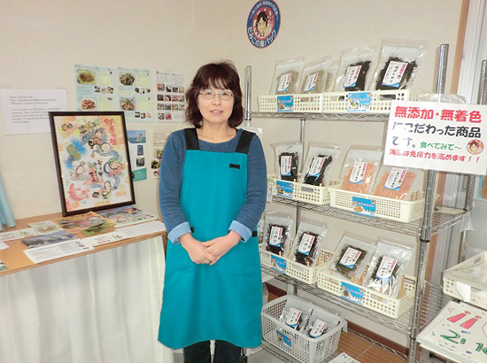
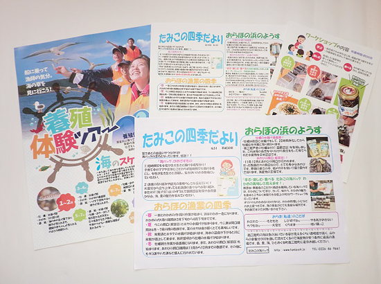

被災地のいま 宮城県・福島県の現状
3.11を忘れない・・
みやぎ生協から被災地・宮城のいまをお伝えします
第69回 2019年5月5日 ―復興を担う女性たち―
「南三陸町の漁業者の思い、町の魅力を伝えたい」
たみこの海パック
「津波を目の当たりにして、もう養殖はやれないと思った」と阿部民子さんは言います。しかし家業である漁業から離れるわけにはいきません。「だったら私は自分にできることで自分の居場所をつくろう」。そう考えて阿部さんは2012年10月、南三陸町の海産物詰合せを販売する「たみこの海パック」を立ち上げました。
「南三陸の海産物をお土産に買って帰りたい」というボランティアの声をヒントに、複数の水産加工場から商品を仕入れ、独自の詰合せセットを考案。ホームページ「たみこの海パック」を開設し、オンラインストアで通信販売を始めました。
さらに女性が短時間でもイキイキと働ける場所をつくりたいと願い、子育て中の女性を一人雇いました。女性は海藻類の袋詰めを、阿部さんは販売に奔走しました。「ボランティアさんに直接、買ってくださいとお願いし、近くの道の駅やスーパーに扱ってほしいと頼みに行きました」。
販路が広がるにつれて売上も増え、翌年秋には黒字を計上できるようになりました。「震災をきっかけに事業を始めた私の生き方を理解し、応援してくれている人たちがたみこの海パックを育ててくれました。人に恵まれたと思います」。
阿部さんには「たみこの海パック」を通じて南三陸町の漁業者の取り組みや町の魅力を伝えていきたいという思いがあります。
そのため商品に浜の様子や復興の歩みを伝える「たみこの四季だより」を同封したり、ワークショップで来町した人たちに南三陸町の漁業の特徴などを描いた紙芝居を披露したりしています。
「震災直後、漁業者は収入減を覚悟の上でカキの養殖いかだを3分の1以下に減らし、環境に配慮した養殖に切り替えました。みんな不安と葛藤のなかでスタートしたのです」。おかげで日本で初めて国際認証ASC（※）を取得できたこと、栄養が行き届いてより美味しいカキが獲れるようになったこと、海藻は漁業権を持った、主に女性たちが岩場を歩いて採っていることなどなど。
「売りたい伝えたい相手は県外・関東の人たち」と阿部さんは言います。それは大きな消費地に住む人たちにこそ生産地である南三陸町の海産物を味わってほしいから、町に足を運んでほしいからだと。
「課題は“伝えること”ですね。インスタやフェイスブックなどSNSを使って発信を続けていきます」と笑顔を見せます。
※ASC認証／養殖水産物に対するエコラベル。環境に負担をかけず地域社会に配慮して操業している養殖業に対する国際的な認証制度。
たみこの海パック https://www.tamipack.jp/

▲阿部民子さん。「たみこの海パック」のアイディアは震災前の14年間、自家製の海産物を友人、知人を通し電話やFAXで販売してきた経験から生まれました。

▲方言やレシピを載せた「たみこの四季だより」、養殖体験ツアー、ワークショップなどを通じて南三陸町を“伝えて”います。
前の記事
第68回「―復興を担う女性たち―「女川スペインタイルを地域の産業・文化として根付かせたい」NPO法人みなとまちセラミカ工房」（2019年4月5日）